中国掐丝珐琅传承网
中国掐丝珐琅传承网
00
-
00
-
00
中国掐丝珐琅传承网
来源：掌上青岛
 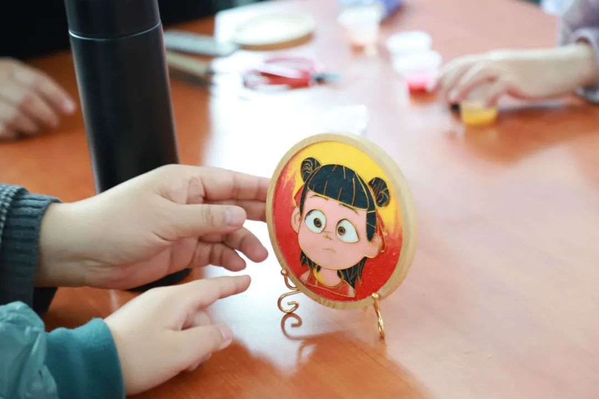
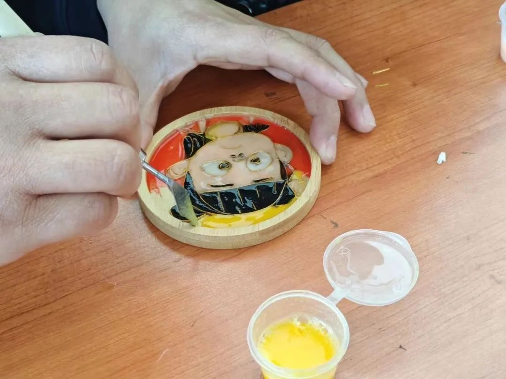
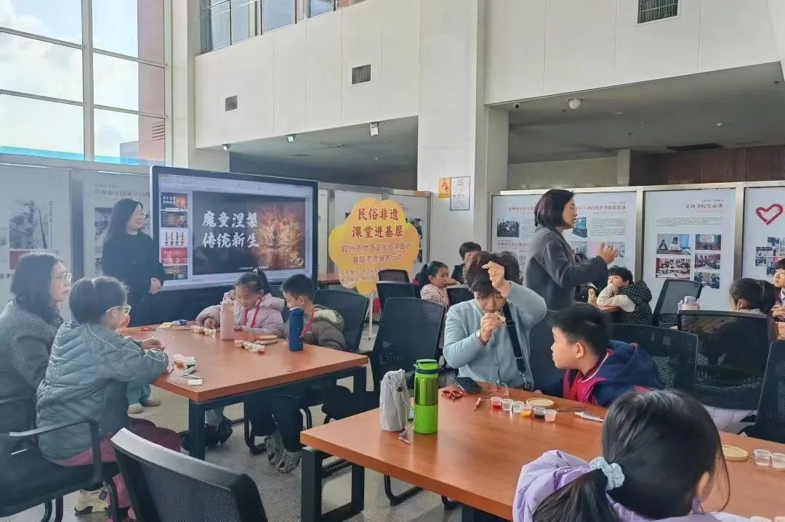
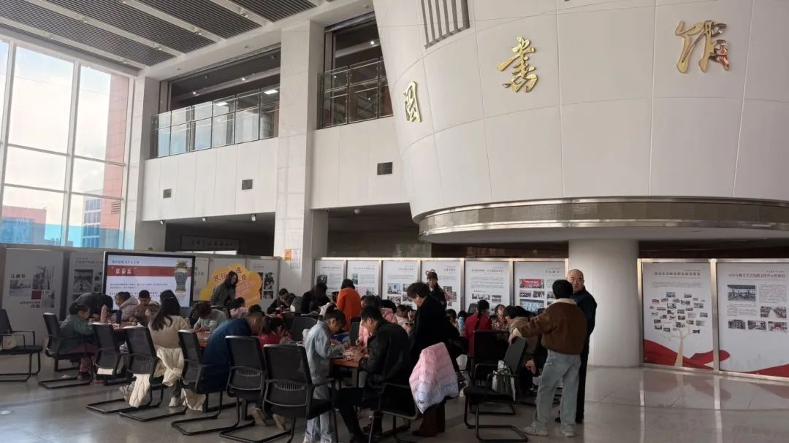
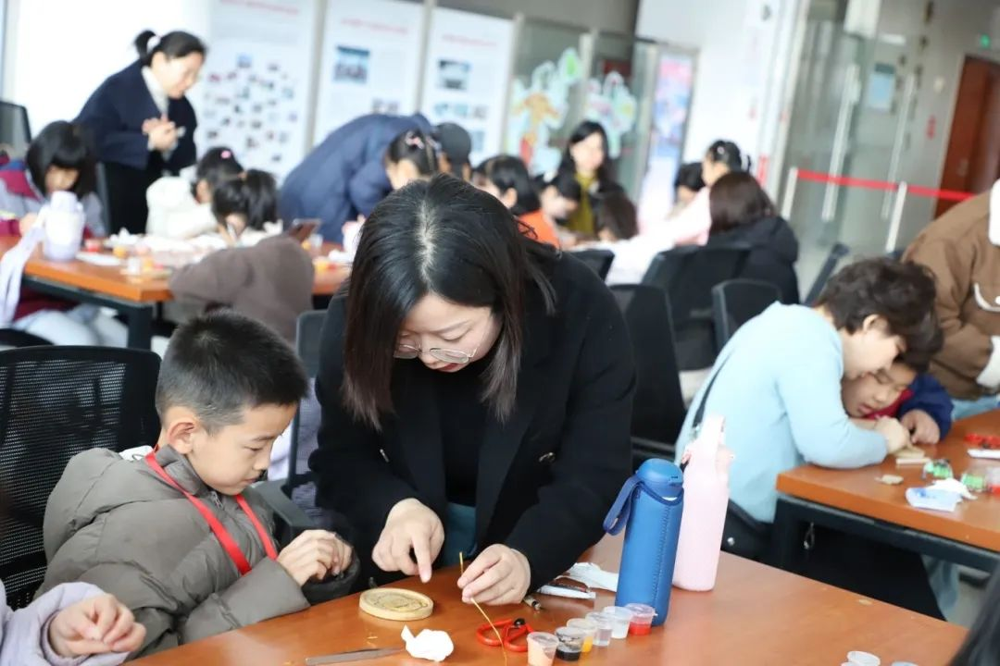
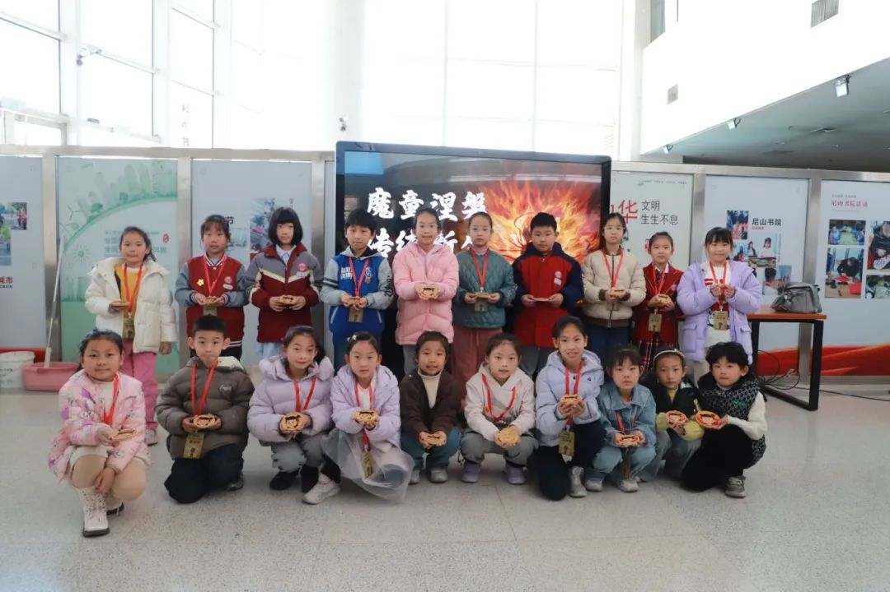
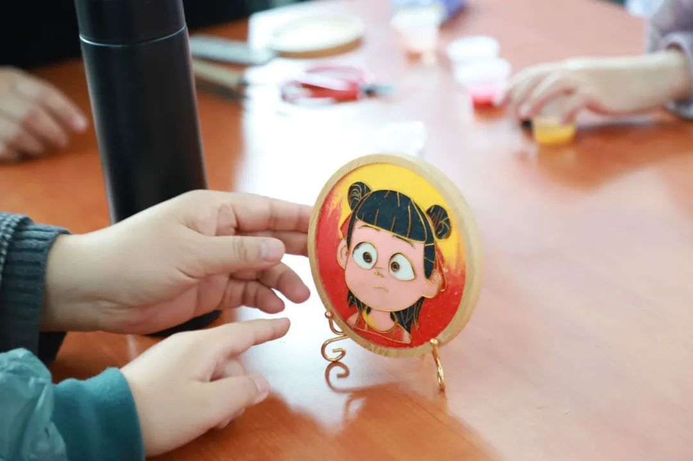
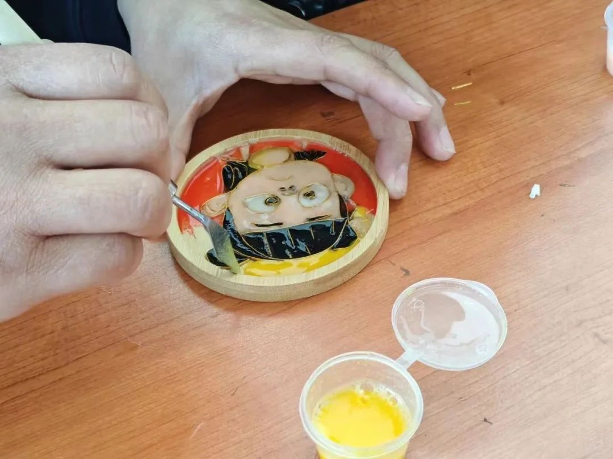
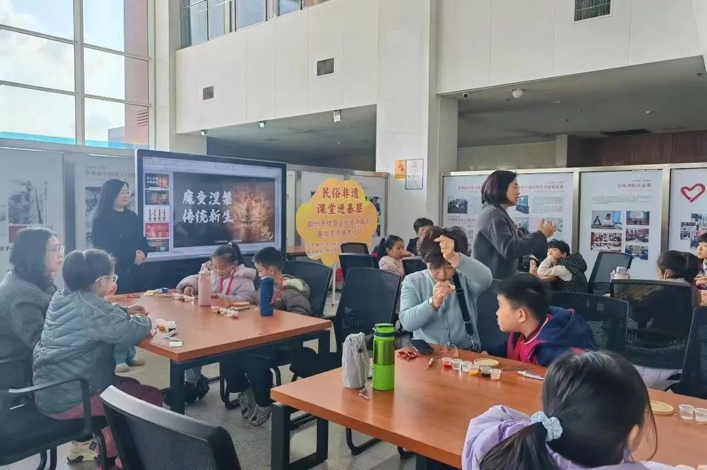
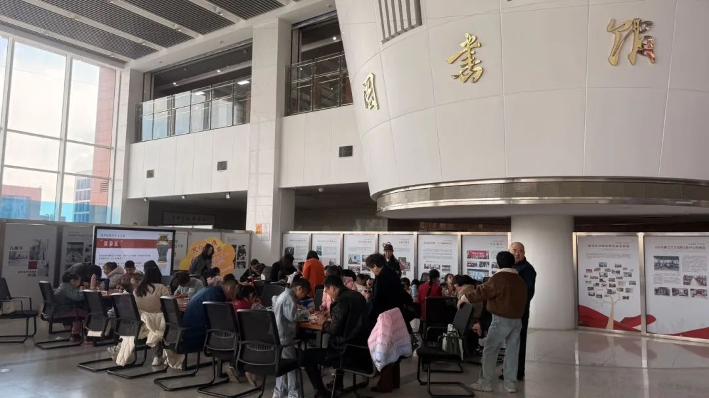
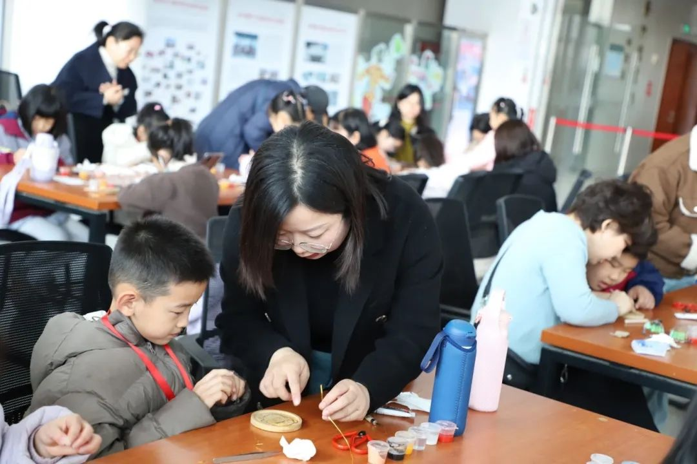
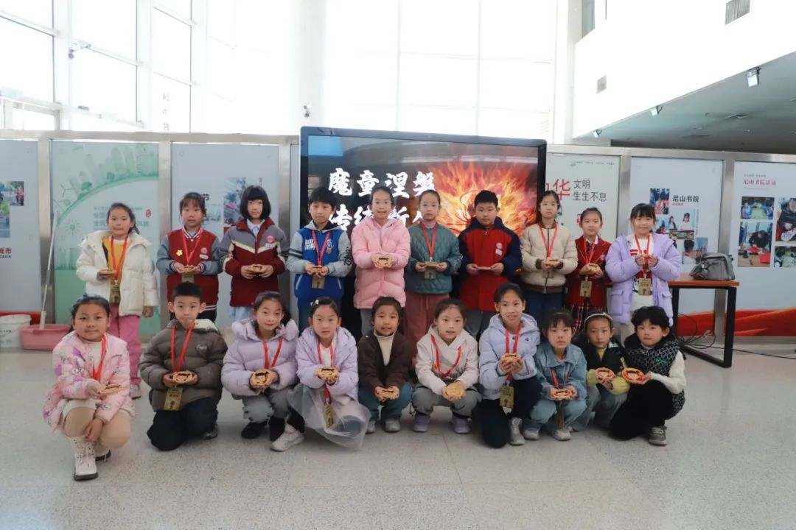
随着电影《哪吒之魔童闹海》中的场景和角色 深入人心 “非遗+国潮”的混搭形式焕发出了新的光彩。
当现代艺术遇见景泰蓝没想到掐丝珐琅也能这么潮!3月16日上午，由胶州市文化旅游局、胶州市图书馆特别策划的“优质文化课程进基层”专场活动，吸引了胶州市瑞华实验小学的20名小记者参与。
揭秘掐丝珐琅技艺：活动讲师王诗梦带领小记者，运用非遗技艺——掐丝珐琅（景泰蓝），制作哪吒元素珐琅盘，开启了一场跨越时空的美学对话。“掐丝珐琅起源于古代地中海地区（如埃及、拜占庭），元代经阿拉伯地区传入中国，明清时期为宫廷御用，每一道工序都是匠心的凝练。”王诗梦现场讲述这项千年技艺的历史。 “掐丝珐琅为什么又叫景泰蓝？”王诗梦为小记者们解答了这个问题，“掐丝珐琅在明朝景泰年间盛行，制作技艺达到巅峰。因其使用的珐琅釉多以蓝色为主，故又名景泰蓝。景泰蓝以典雅雄浑的造型、清丽庄重的色彩著称。”
对于掐丝珐琅和瓷器的区别，讲师介绍说，掐丝珐琅与瓷器是两种截然不同的传统工艺，掐丝珐琅是“金属胎+珐琅彩”，瓷器是“瓷土胎+高温釉”，两者在材料、制作工艺、历史背景和艺术特征等方面差异显著，但均为东方工艺的瑰宝。
三小时制作珐琅盘。在初步认识了掐丝珐琅后，讲师又结合电影《哪吒之魔童闹海》，对比传统动画与现在科技电影中的差异，分析了影片中的不同角色。哪吒具有叛逆与善良、孤独与勇敢的性格特点，成了这堂课的聚焦点，讲师在提前做好的木质杯垫上，手绘出哪吒头像。“这项技艺有绘图、掐丝、点蓝、封层等12道工序，仅‘点蓝’环节就要进行5-7次釉料填充。”在了解制作方法和流程后，小记者们投入到掐丝珐琅制作中。
小记者臧贺说，“掐丝是最难的一个环节。点蓝也很难，尤其是点眼睛的时候黑色和白色很容易混在一起，头发上的黑色很容易和脸上的肉色混在一起。”带着种种好奇心，小记者们在家长的协助下，以掐丝技艺勾勒出哪吒的身影，用绚烂的珐琅色彩填充出哪吒的形象。经过三小时精心制作，20件哪吒图案的珐琅盘相继完成。小记者纪嘉怡说：“这堂课感受到了历史文化的深厚，觉得手艺人真不容易。”小记者刘婉婷说：“一开始做的时候很难，想放弃，后来觉得很有趣，就耐下心来做完了。”
传统文化课堂变常态。为了让更多传统文化爱好者体验到这门手作，在掐丝珐琅体验活动中，胶州市图书馆工作人员用彩砂替代釉料，优化其呈色效果，彩砂里放入调沙胶增加固定性，最后用特制固沙胶封层，干透之后整面形成磨砂质感，确保作品可以保存更久。
这次探索传统与现代文化的交融活动，小记者们“闯”进非遗与神话的奇幻之旅中，是一次手作体验，更是一场对传统文化的致敬与创新。胶州市图书馆馆长倪子昂表示：优质文化课程进基层活动为市民及青少年提供了一个了解和体验传统文化的机会，让他们在动手实践中感受传统文化的魅力。未来将进一步丰富活动形式，扩大覆盖范围，让更多市民和青少年感受传统文化。